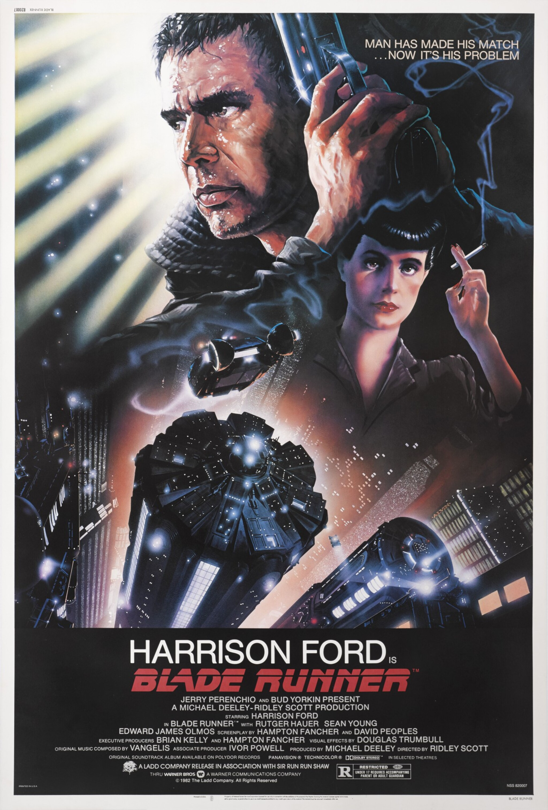
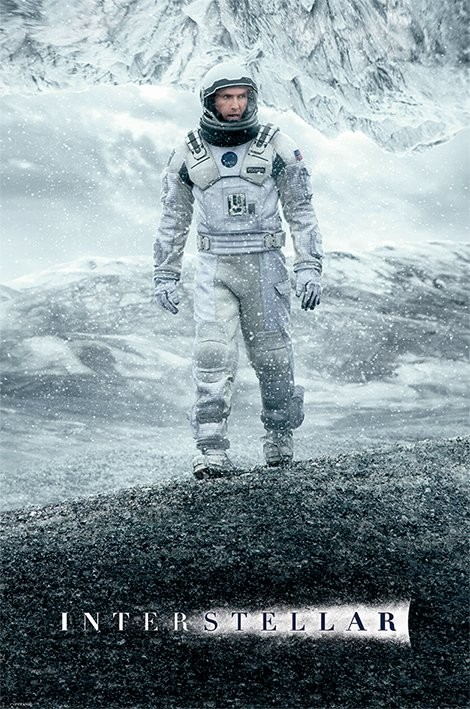

Top Sci-Fi Movies
Blade Runner (1982)
star8.1| R | 117 min | Action, Drama, Sci-Fi
84 Metascore Votes: 747,324 | Gross: $32.87MA blade runner must pursue and terminate four replicants who stole a ship in space, and have returned to Earth to find their creator...
Director: Ridley Scott | Stars:| Harrison Ford | Rutger Hauer | Sean Young | Edward James Olmos |
|---|---|---|---|
Inception (2010)

star8.8|PG-13 | 148 min | Action, Adventure, Sci-Fi
74 Metascore Votes: 2,263,657 | Gross: $292.58MA thief who steals corporate secrets through the use of dream-sharing technology is given the inverse task of planting an idea into the mind of a C.E.O., but his tragic past may doom the project and his team to disaster.
Director: Christopher Nolan | Stars:| Leonardo DiCaprio | Joseph Gordon-Levitt | Elliot Page | Ken Watanabe |
|---|---|---|---|
Dune (2021)

star8.1|PG-13 | 155 min | Action, Adventure, Sci-Fi
74 Metascore Votes: 560k | Gross: $400Mmythic and emotionally charged hero's journey, "Dune" tells the story of Paul Atreides, a brilliant and gifted young man born into a great destiny beyond his understanding, who must travel to the most dangerous planet in the universe to ensure the future of his family and his people. As malevolent forces explode into conflict over the planet's exclusive supply of the most precious resource in existence-a commodity capable of unlocking humanity's greatest potential-only those who can conquer their fear will survive.
Director: Denis Villeneuve | Stars:| Timothee Chalamet | Rebecca Ferguson | Zendaya | Oscar Isaac |
|---|---|---|---|
Avatar (2009)
star7.8|PG-13 | 162 min | Action, Adventure, Sci-Fi
83 Metascore Votes: 1.2M | Gross: $2.8BA paraplegic Marine dispatched to the moon Pandora on a unique mission becomes torn between following his orders and protecting the world he feels is his home.
Director: James Cameron | Stars:| Sam Worthington | Zoe Saldana | Sigourney Weaver |
|---|---|---|
The Martian(2015)

star8.0|PG-13 | 144 min | Action, Drama, Sci-Fi
80 Metascore Votes: 827k | Gross: $630MAn astronaut becomes stranded on Mars after his team assume him dead, and must rely on his ingenuity to find a way to signal to Earth that he is alive and can survive until a potential rescue.
Director: Ridley Scott | Stars:| Matt Damon | Jessica Chastain | Kristen Wiig |
|---|---|---|
The Matrix (1999)

star8.7|R | 136 min | Action, Sci-Fi
73 Metascore Votes: 1,854,780 | Gross: $171.48MWhen a beautiful stranger leads computer hacker Neo to a forbidding underworld, he discovers the shocking truth--the life he knows is the elaborate deception of an evil cyber-intelligence.
Directors: Lana Wachowski, Lilly Wachowski | Stars:| Keanu Reeves | Laurence Fishburne | Carrie-Anne Moss | Hugo Weaving |
|---|---|---|---|
Interstellar(2014)
star8.6|PG-13 | 169 min | Action, Sci-Fi
74 Metascore Votes: 1.7M | Gross: $701MA team of explorers travel through a wormhole in space in an attempt to ensure humanity's survival.
Directors: Christopher Nolan | Stars:| Matthew McConaughey | Anne Hathaway | Jessica Chastain |
|---|---|---|